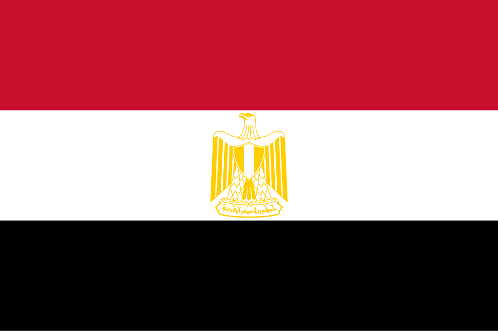

Egito
 O Egito, oficialmente República Árabe do Egito, é um país localizado no nordeste da África, com parte de seu território na Península do Sinai, na Ásia, fazendo dele um Estado transcontinental. Faz fronteira com o Sudão ao sul, a Líbia a oeste, Israel e a Faixa de Gaza a nordeste, além de ser banhado pelo Mar Mediterrâneo ao norte e pelo Mar Vermelho a leste. O Rio Nilo, que atravessa o país de sul a norte, é o coração da vida egípcia, sustentando a agricultura e as cidades ao longo de suas margens. Com mais de 110 milhões de habitantes, o Egito é o país árabe mais populoso e o terceiro mais populoso da África. Sua capital é Cairo, uma metrópole vibrante e centro político, econômico e cultural do mundo árabe.
História
A história do Egito é uma das mais antigas e fascinantes do mundo, marcada pela civilização faraônica que floresceu às margens do Nilo há mais de 5.000 anos. O Egito Antigo é célebre por suas conquistas arquitetônicas, como as pirâmides de Gizé e o templo de Karnak, e por sua influência duradoura em áreas como escrita, religião e administração. Após o período dos faraós, o território foi dominado por diversos impérios, incluindo persas, gregos sob Alexandre, o Grande, e posteriormente pelos romanos, tornando-se uma província vital do Império Romano e depois do Império Bizantino.
No século VII, com a expansão islâmica, o Egito foi incorporado ao mundo árabe-muçulmano, tornando-se centro religioso e cultural de destaque. Sob domínio otomano e, mais tarde, britânico, o país manteve sua importância estratégica por controlar o Canal de Suez, inaugurado em 1869. A independência parcial veio em 1922, mas só em 1952, com a Revolução liderada por Gamal Abdel Nasser, o Egito tornou-se plenamente soberano, adotando uma política nacionalista e pan-arabista. Desde então, o Egito desempenha papel fundamental na política do Oriente Médio, sendo o primeiro país árabe a reconhecer Israel em 1979 e mantendo grande relevância até os dias atuais.
Cultura
A cultura egípcia é uma das mais ricas do mundo, resultado da fusão entre tradições milenares e influências árabes e islâmicas. O legado faraônico permanece vivo por meio de monumentos, templos e museus que atraem milhões de turistas. A língua oficial é o árabe egípcio, enquanto o islamismo, em sua maioria sunita, é a religião predominante, coexistindo com minorias cristãs coptas. O Egito também é um polo cultural do mundo árabe, influenciando a música, o cinema, a literatura e a televisão em toda a região.
A culinária egípcia é marcada por pratos à base de grãos, legumes e temperos, como o koshari, considerado prato nacional, e o ful medames, feito de favas. O artesanato, como papiros, joias e tapeçarias, reflete a continuidade de tradições antigas. Além disso, a dança do ventre, ou raqs sharqi, é uma das expressões artísticas mais conhecidas internacionalmente. O país valoriza tanto sua herança faraônica quanto sua identidade árabe contemporânea, tornando sua cultura uma das mais influentes da África e do Oriente Médio.


Clima
O clima do Egito é predominantemente desértico, com temperaturas extremamente altas no verão e mais amenas no inverno. As chuvas são escassas e se concentram principalmente no norte, próximo ao litoral mediterrâneo. O centro e o sul do país apresentam aridez intensa, com grandes extensões de deserto. O oásis e o Vale do Nilo são as principais áreas férteis, possibilitando a agricultura que sustenta a população há milênios.
A região costeira, ao norte, apresenta clima mediterrâneo, com verões quentes e invernos mais suaves. Já a região do Mar Vermelho é conhecida por temperaturas elevadas e grande potencial turístico, devido às praias e recifes de corais. O clima árido do Egito moldou a vida e a cultura do país, sendo o Nilo o recurso vital que garante a sobrevivência em meio ao deserto.
Biodiversidade
A biodiversidade do Egito é limitada pelas condições desérticas, mas o país possui ecossistemas únicos ao longo do Rio Nilo, do Delta e do Mar Vermelho. Nas margens do Nilo, a fauna inclui aves aquáticas, crocodilos-do-nilo, hipopótamos e uma grande diversidade de peixes. Já nos desertos, predominam espécies adaptadas à aridez, como raposas-do-deserto, gazelas, escorpiões e répteis.
O litoral do Mar Vermelho é um dos pontos mais ricos em biodiversidade marinha do planeta, com recifes de corais, golfinhos, tartarugas-marinhas e centenas de espécies de peixes. O Egito possui áreas de conservação, como o Parque Nacional Ras Mohammed, mas ainda enfrenta desafios de preservação devido à expansão urbana, poluição e turismo descontrolado em algumas áreas costeiras.

Cidades
O Egito possui várias cidades de grande importância histórica, econômica e cultural. A capital, Cairo, é a maior cidade do mundo árabe e da África, com mais de 20 milhões de habitantes em sua região metropolitana. É o centro político e cultural do país, abrigando monumentos islâmicos, mesquitas históricas e o famoso Museu Egípcio. Alexandria, localizada no litoral mediterrâneo, é a segunda maior cidade do Egito e um importante porto, conhecida por sua história ligada à Biblioteca de Alexandria e ao Farol, uma das Sete Maravilhas do Mundo Antigo.
Outras cidades de destaque incluem Luxor, que preserva templos e tumbas faraônicas como o Vale dos Reis; Assuã, famosa pela represa e pelo Lago Nasser; e Sharm El Sheikh e Hurghada, que são importantes centros turísticos no Mar Vermelho. Cairo e Alexandria são as duas maiores cidades do país, simbolizando a combinação de tradição e modernidade que caracteriza o Egito.
.jpg)